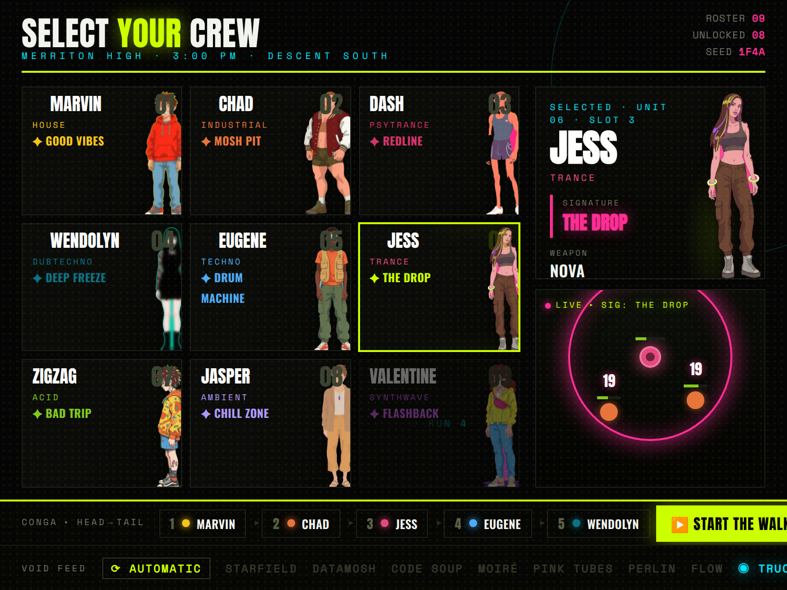
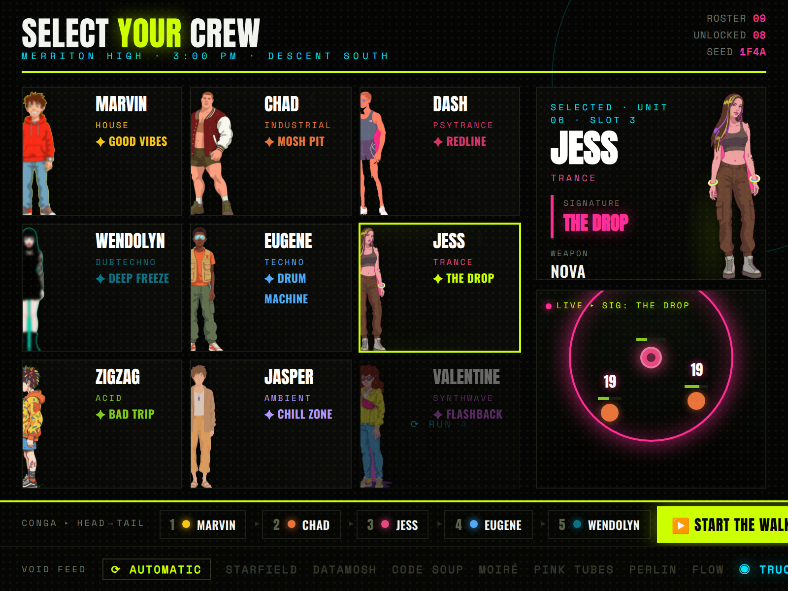
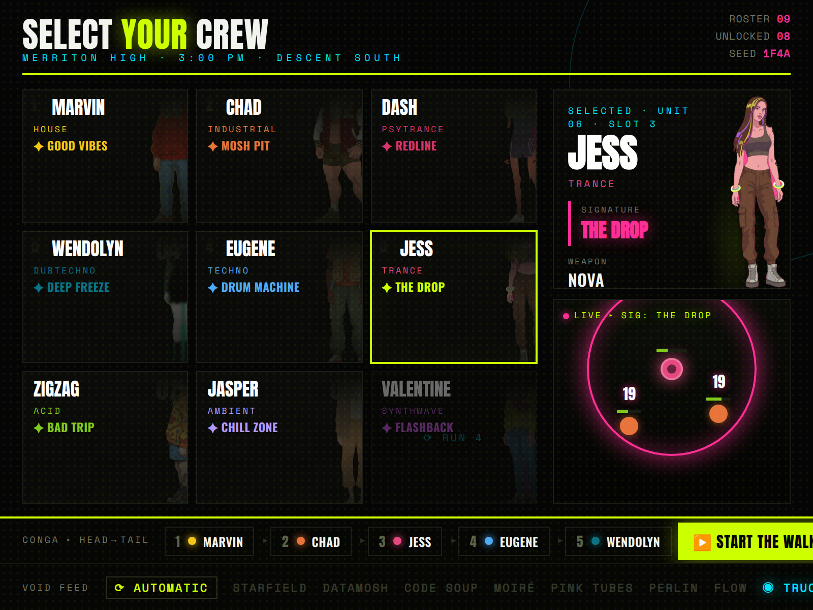
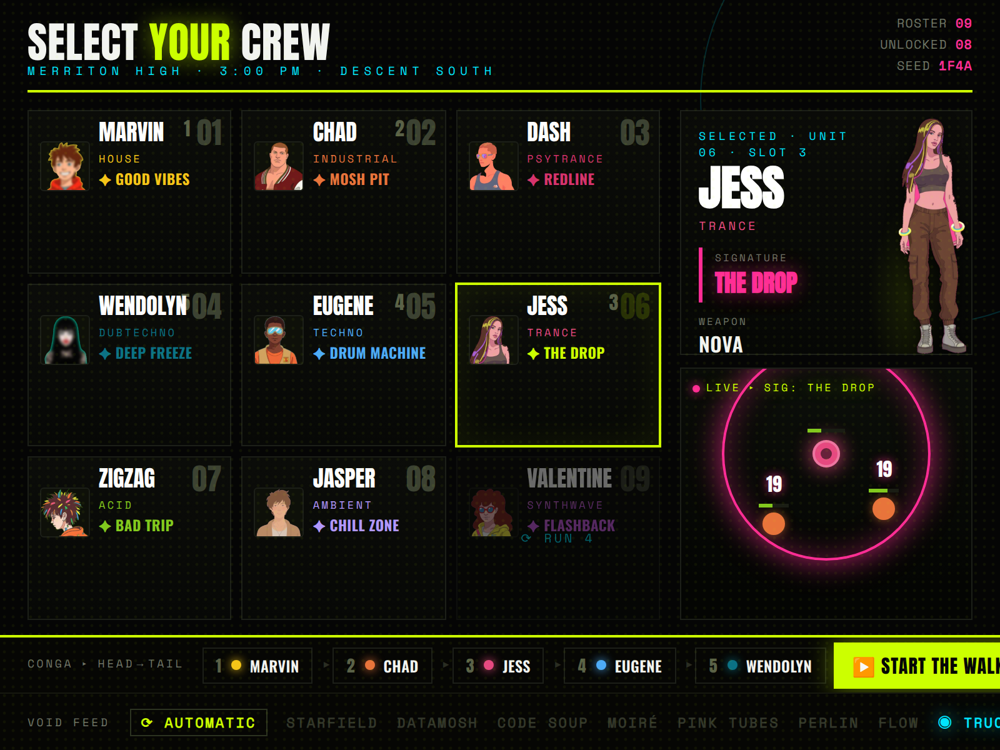

Real look-bible portraits stubbed in (background-knocked-out cutouts). Each version puts the figure in a different spot in the card; the selected hero always gets the larger full-body in the dossier. Scanline interlacing dropped from the arena per note.




Portraits are placeholder stubs from art-test/look-bible (the _1 variant, bg knocked out). Some cutouts have a faint colour fringe at the hair edge — a clean-up pass when we lock art. Want a different portrait variant (_2/_3) for anyone, say so.